Plateforme de gestion intégrée des enquêtes et dossiers d'instruction pour un parquet de tribunal judiciaire — multi-contentieux, multi-utilisateurs, avec synchronisation, alertes et cartographie relationnelle.
APP MÉTIER est une application de bureau Windows (Electron + Next.js) développée pour le Parquet du Tribunal Judiciaire d'Amiens. Elle outille le quotidien des magistrats et des juristes assistants pour le suivi des enquêtes pénales sur trois contentieux spécialisés :
● CRIMORG Criminalité organisée ● ECOFI Économique & financier ● ENVIRO Environnement
| Lignes de code | ≈ 47 000 (TypeScript / TSX) |
| Composants UI | ≈ 133 fichiers React |
| Hooks personnalisés | 25+ |
| Modules utilitaires | 30+ |
| Handlers IPC Electron | 150+ méthodes exposées au renderer |
| Cible | Windows portable (exécutable autonome) |
Les magistrats du parquet jonglent quotidiennement avec un grand nombre de procédures, chacune ponctuée d'échéances légales strictes (prolongations d'actes, durées maximales de détention provisoire, délais JLD). Les outils nationaux existants ne couvrent pas finement le suivi opérationnel par contentieux spécialisé ni la vision transversale entre dossiers. APP MÉTIER vient combler ce vide en offrant :
La gestion multi-profils répond à deux exigences : la sécurité des données sensibles (cloisonnement par contentieux, lecture seule pour certains rôles) et la vision hiérarchique globale indispensable au pilotage du service. Un utilisateur ne peut accéder à l'application qu'après création de son profil par un administrateur puis validation explicite de ce profil : aucun accès anonyme, aucune auto-inscription.
| Rôle | Périmètre | Capacités principales |
|---|---|---|
| Administrateur | Global | Gestion des utilisateurs, paramétrage serveur, validation des mises à jour. |
| PRA / Vice-procureur | Global | Vision et édition tous contentieux, gestion alertes globales. |
| Magistrat | Par contentieux | Création, édition, archivage d'enquêtes et d'instructions sur ses contentieux. |
| JA (juriste assistant) | Par contentieux | Saisie, suivi, contribution sur les contentieux affectés. |
| JLD | Global, lecture seule | Consultation des dossiers, suivi des décisions à valider — comptes rendus masqués. |
APP MÉTIER est une application Electron qui embarque une application Next.js côté interface. Les données vivent en fichiers JSON locaux et sont synchronisées vers un partage réseau (SMB) accessible à tous les utilisateurs autorisés.
┌─────────────────────────────────────────────────────────────────┐
│ POSTE UTILISATEUR (Windows) │
│ │
│ ┌──────────────────────┐ ┌─────────────────────────┐ │
│ │ Renderer Next.js │ IPC │ Main process Electron │ │
│ │ (React 18 + Tailwind)│ ◄────► │ (Node.js — main.js) │ │
│ │ • UI │ │ • Fichiers locaux │ │
│ │ • State (Zustand) │ │ • OCR (Tesseract) │ │
│ │ • Charts, Mindmap │ │ • Sync SMB │ │
│ └──────────────────────┘ │ • Audit / Heartbeat │ │
│ └────────────┬────────────┘ │
└─────────────────────────────────────────────────┼────────────────┘
│
┌───────────────┴───────────────┐
│ PARTAGE RÉSEAU (SMB) │
│ • app-data-{contentieux}.json
│ • users.json, tag-data.json │
│ • shared-events, heartbeat │
│ • backups horodatés │
└───────────────────────────────┘
Aucun serveur applicatif n'est requis : la synchronisation repose sur des écritures atomiques sur un partage Windows partagé, avec gestion des conflits, journal d'événements partagés et présence (heartbeat) des utilisateurs.
La fenêtre principale présente, à gauche, une barre latérale verticale qui regroupe la navigation par contentieux (chacun avec sa couleur identifiante). Sous chaque contentieux apparaissent les vues Enquêtes, Archives et Statistiques. Les modules transverses (Instructions, Cartographie, Alertes, Tags, Sauvegarde) sont accessibles en bas de la barre.
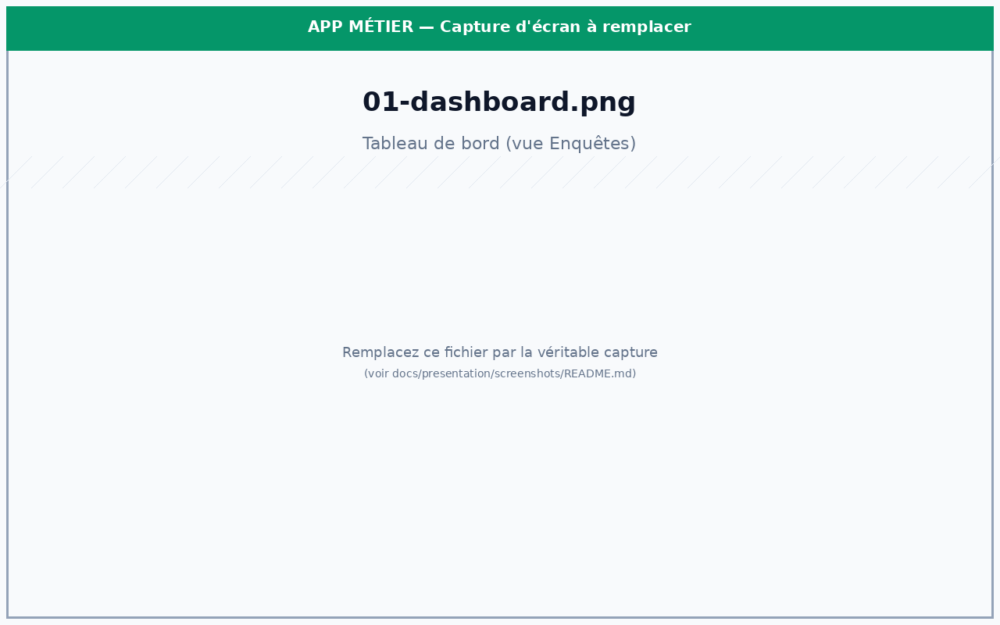
Le header supérieur contient un indicateur de synchronisation, un bouton de sauvegarde manuelle, l'indicateur d'état réseau, et la cloche d'alertes.
La barre de recherche du header est l'un des outils les plus puissants de l'application. Elle interroge en un seul geste :
Cette recherche transverse est précieuse pour recouper des affaires qui semblent isolées et pour identifier les signaux faibles qu'on aurait manqués sans cette vision croisée.
L'overboard est l'écran d'ouverture orienté pilotage. Il agrège ce qui est réellement à surveiller :
Dès qu'un utilisateur ouvre un dossier modifié par un collègue depuis sa dernière consultation, une popup « modifications non vues » détaille horodate par horodate ce qui a changé (ajout/suppression d'un mis en cause, modification du compte rendu, ajout de document, etc.). Aucune mise à jour silencieuse — chaque évolution est tracée et restituée à l'utilisateur.
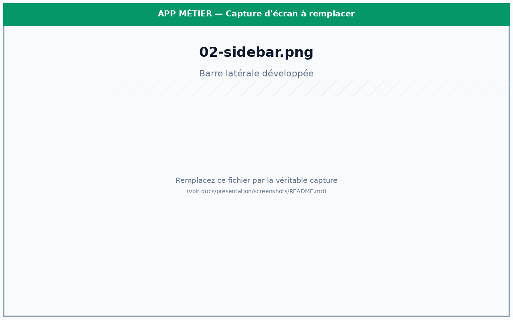
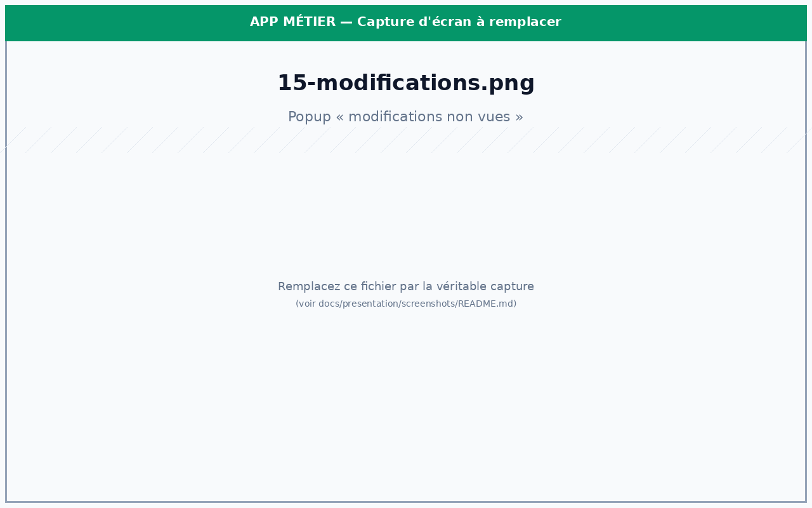
Une enquête est représentée sous forme d'une carte dans la grille principale. Filtres et tri sont disponibles en barre supérieure (par service, infraction, durée, statut, présence de JLD, tags, mention JIRS ou PG).
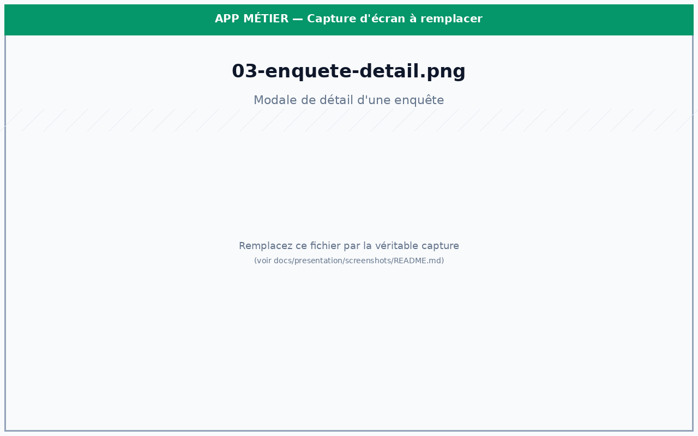
L'ouverture d'une enquête déploie une modale structurée couvrant l'intégralité du cycle de vie du dossier :
À la saisie d'un nom de mis en cause, l'application rappelle les occurrences précédentes du même nom dans la base — toutes enquêtes confondues, y compris les archives. Ce mécanisme permet d'identifier rapidement les noms qui reviennent souvent, de repérer un récidiviste, ou de croiser deux dossiers qui partagent un acteur sans que les magistrats l'aient initialement rapproché.
Les comptes rendus s'ajoutent à la suite, datés et signés du rédacteur. Ils sont colorés différemment selon leur catégorie (compte rendu d'enquête, compte rendu d'audience, échange avec le service…) ce qui permet de retrouver visuellement le bon CR sans avoir à tout relire. Les passages clés (« Exploitation des comptes », « Immobilisation »…) peuvent être surlignés pour gagner en lisibilité.
Chaque dossier embarque sa propre liste « À faire » (check-list opérationnelle) et une date d'opération (OP) planifiée. Ces informations remontent dans la timeline collective du service (voir §4.1) pour permettre au chef de service de répartir les présences et d'éviter les conflits de date entre opérations sensibles.
Les pièces du dossier sont rattachées par simple glisser-déposer dans la modale (zones « Géolocalisations », « Écoutes », « Documents » visibles à droite). Chaque dépôt :
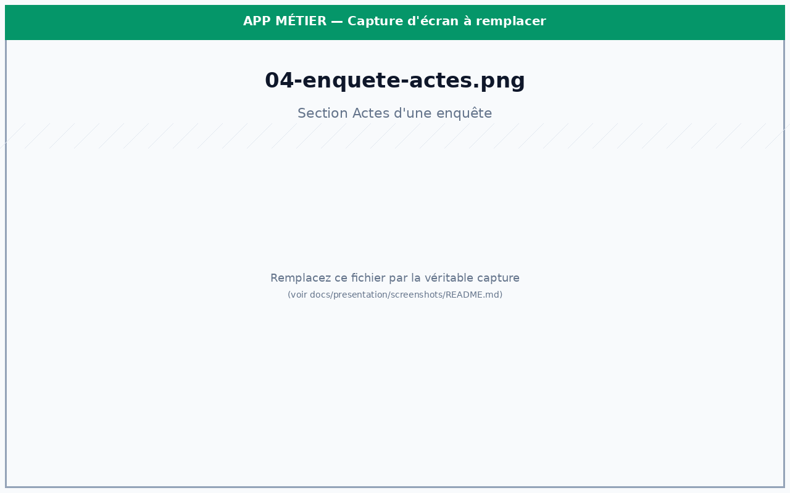
Un dossier rarement reste isolé. Deux mécanismes l'inscrivent dans le fonctionnement collectif du parquet :
Le module Instructions couvre les dossiers ouverts à l'instruction (post-information judiciaire). Il modélise :
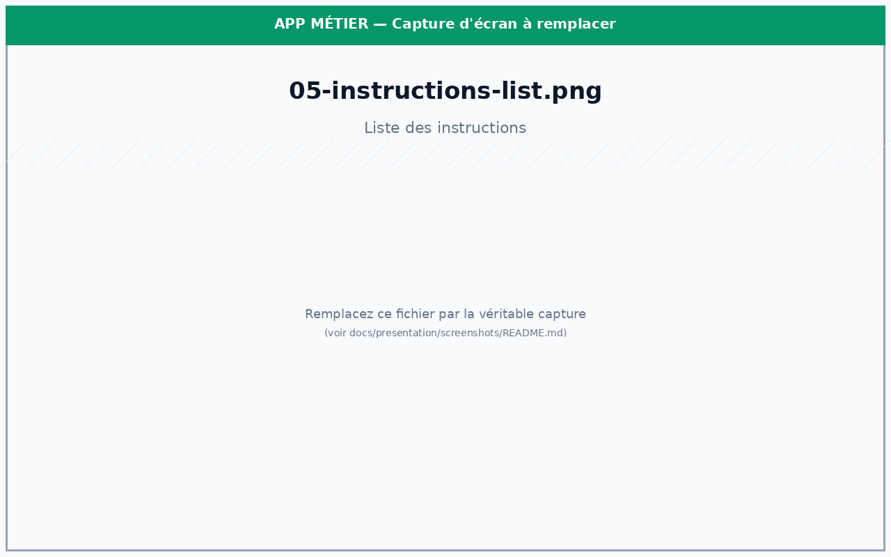
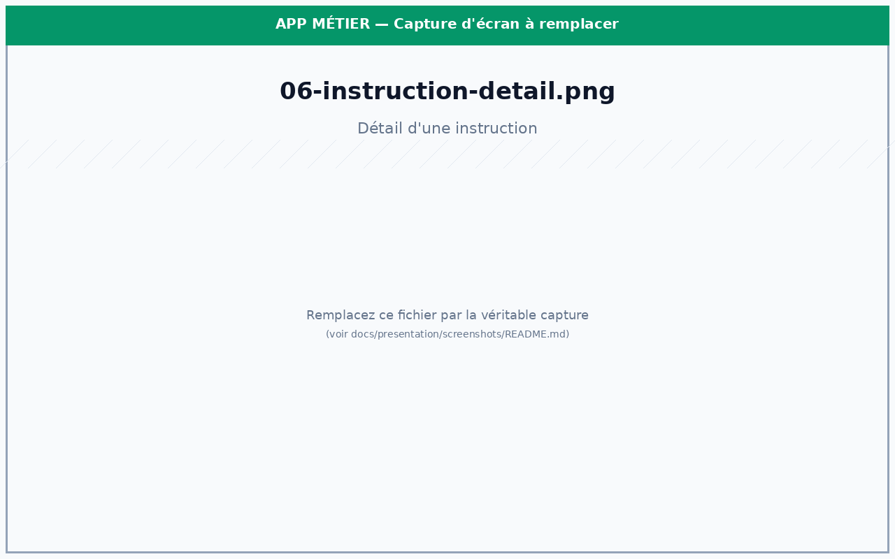
La cartographie (mindmap) propose une vue force-directed des dossiers d'un contentieux. Chaque nœud représente un mis en cause ; les liens matérialisent les co-occurrences entre enquêtes. Les nœuds sont regroupés en galaxies par type d'infraction et peuvent être enrichis d'overlays (focus CRIM ORG, influence convex hull). Un système de score paramétrable (degré, centralité, fréquence, présence cross-contentieux) hiérarchise visuellement les acteurs clés.
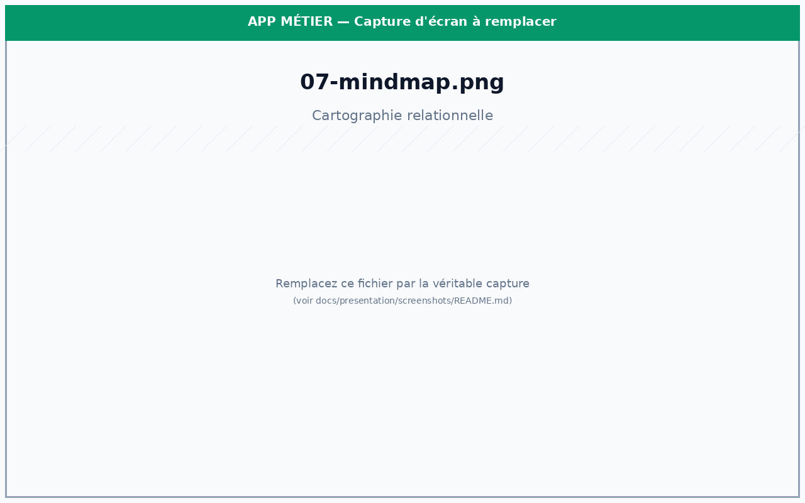
Les statistiques sont l'un des points forts de l'outil pour le pilotage du service. Elles sont disponibles à deux niveaux :
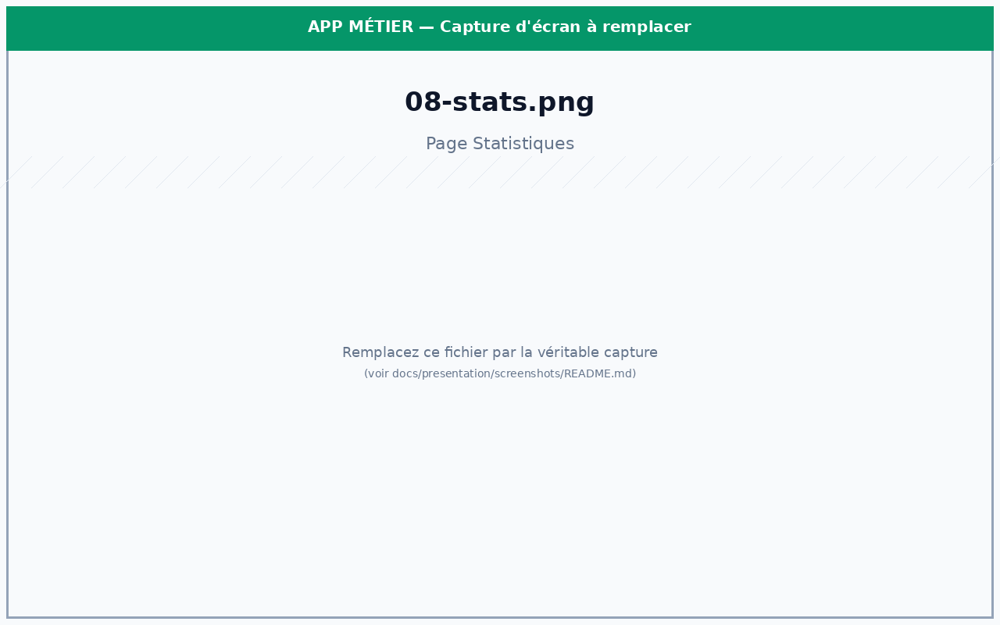
Le moteur d'alertes évalue en continu les règles configurables par contentieux. Trois familles cohabitent :
Chaque utilisateur peut affiner les seuils. Les alertes apparaissent sous forme de badges dans la barre latérale, d'une cloche dans le header, et de toasts. Une page dédiée centralise la consultation et la gestion des règles.
Au premier lancement de chaque semaine, une popup « récapitulatif hebdomadaire » synthétise pour l'utilisateur : les enquêtes nouvellement créées, les actes posés, les échéances à venir dans les sept prochains jours, et les dossiers qui n'ont pas évolué depuis longtemps. Un point de situation rapide, sans avoir à fouiller la base.
L'import greffe rapatrie les éléments enregistrés au registre du tribunal pour les intégrer comme champs structurés dans les enquêtes (numéro de parquet, dates, parties). Cela évite la double saisie et garantit la cohérence avec les références officielles du dossier.
Le module Sauvegarde est le poste de contrôle du multi-utilisateur. Il affiche :
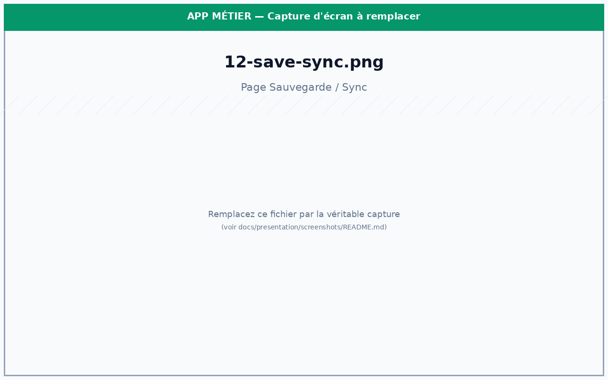
La synchronisation est par contentieux et orchestrée par
MultiSyncManager. Chaque écriture déclenche également un
shared event côté serveur permettant aux autres postes d'être notifiés
des changements pertinents (création, modification, archivage).
Les administrateurs disposent de panneaux dédiés :
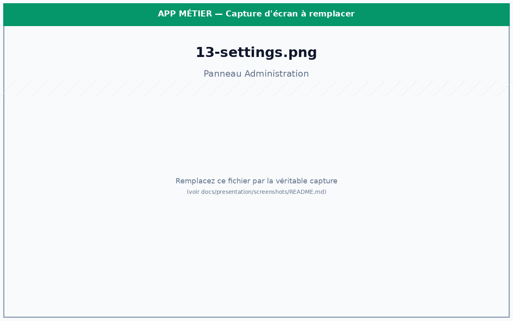
| Couche | Technologies | Rôle |
|---|---|---|
| Application desktop | Electron 30, Node.js (Windows portable) | Conteneur, accès système, IPC vers le rendu. |
| Interface | Next.js 13.5 (app router), React 18, TypeScript 5 | Rendu de l'UI, navigation, lazy loading des modules lourds. |
| Styles | Tailwind CSS, Radix UI (15+ primitives), lucide-react | Design system cohérent, composants accessibles, icônes. |
| État | Zustand (6 stores), Jotai, React Context | État partagé performant, séparation par domaine. |
| Formulaires & validation | react-hook-form, zod | Saisie performante, validation par schéma. |
| Graphiques | Chart.js + react-chartjs-2, Recharts | Tableaux de bord statistiques. |
| Cartographie | @xyflow/react, d3-force | Graphe interactif, layout force-directed. |
| Documents | pdf-lib, pdfjs-dist, html2pdf.js, html-docx-js, xlsx | Export PDF/DOCX/XLSX, lecture de PDF. |
| OCR | tesseract.js (données tessdata/ embarquées) |
Extraction de texte depuis images et PDFs scannés. |
| Persistance & sync | Fichiers JSON locaux, partage SMB Windows | Multi-utilisateur sans serveur applicatif. |
main.js)
~3 300 lignes. Responsable de l'ensemble des accès système, exposés au
renderer via un context bridge sécurisé (preload.js).
Catégories de handlers IPC :
getData, setData, écritures atomiques par contentieux, gestion des dossiers data/, casiers/, documentenquete/, backups/.dataSync:pull/push par contentieux (MultiSyncManager), globalSync:* pour les ressources globales (tags, alertes, audience, IDs supprimés, cartographie, préférences utilisateur).heartbeat:write/readAll, sharedEvent:write/readRecent.auditLog:append pour la traçabilité des modifications.app:checkUpdate/applyUpdate avec validation administrateur centralisée.powerMonitor).preload.js)
Isolation de contexte stricte : aucune API Node n'est exposée à la page rendue.
Seules les méthodes énumérées sur window.electronAPI sont disponibles.
Architecture orientée modules. Points d'entrée :
app/layout.tsx : layout racine, polices, styles globaux.app/page.tsx : composition principale (sidebar + header + vue active).Saisie utilisateur
│
▼
Composant React ──► Hook (useContentieuxEnquetes, useInstructions, …)
│ │
│ ▼
│ Store Zustand ──► re-render filtré (useMemo)
│
▼
StorageManager ──► electronAPI.dataSync_push()
│
▼
main.js / MultiSyncManager
│
▼
Partage réseau (SMB)
│
▼
sharedEvent: notif aux autres postes| Domaine | Type principal | Champs clés |
|---|---|---|
| Enquête | Enquete | numéro, dates, statut, misEnCause[], geoloc, ecoutes, actes, saisies, tags, todos, documents, modifications[] |
| Instruction | DossierInstruction | cabinet, magistrat, misEnExamen[], infractions[], timeline[], mesures[], resultats[] |
| Audience | ResultatAudience | type (CRPC-Def, CI, COPJ, OI, CDD), peine, saisies décidées |
| Utilisateur | UserProfile | roles globaux, roles par contentieux, préférences |
| Cartographie | CartographieConfig | poids scoring (degré, centralité, fréquence, cross-contentieux) |
Le dossier migrations/ définit les versions de schéma (v1, v2)
et un MigrationManager qui applique les transformations au chargement
si la version locale est antérieure. Garantit la compatibilité ascendante des
données existantes lors des évolutions.
preload.js.
L'application est packagée en exécutable Windows portable
(electron-builder cible portable). Les utilisateurs
lancent l'application via launcher.bat qui détecte
automatiquement Node.js portable et démarre Electron. Aucune installation
système n'est nécessaire.
Un mécanisme de vérification des mises à jour interroge un dépôt distant (GitHub releases). Une fois une nouvelle version repérée, l'administrateur la valide pour qu'elle soit proposée aux autres postes — empêchant les déploiements non maîtrisés.
| Code source | Dépôt Git interne (branche de présentation : claude/app-presentation-docs-O818B) |
| Captures d'écran | docs/presentation/screenshots/ |
| Build PDF | bash docs/presentation/build-pdf.sh |
| Auteur | Audran Chevalier — Parquet du TJ d'Amiens |
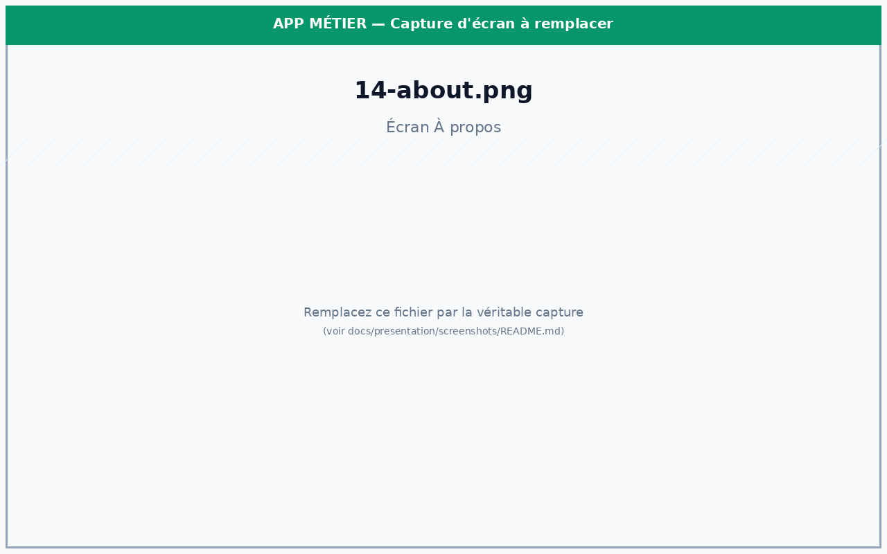
APP MÉTIER — v1.0 · © 2025–2026 Audran Chevalier ·
Document généré pour présentation interne.
Propriété intellectuelle exclusive — toute reproduction, diffusion ou utilisation non autorisée est strictement interdite.